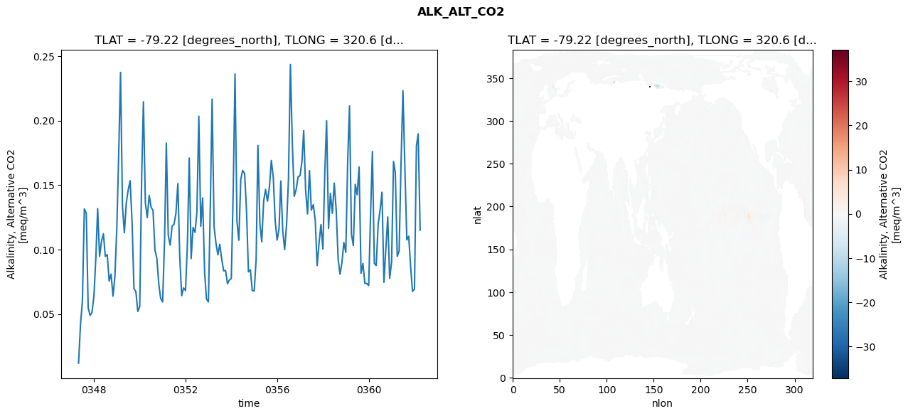
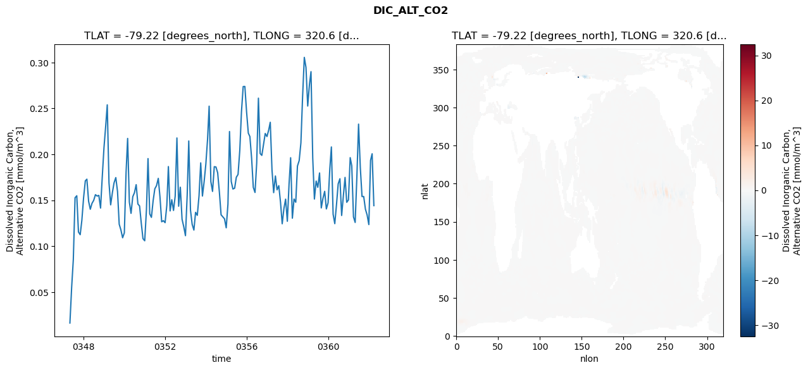
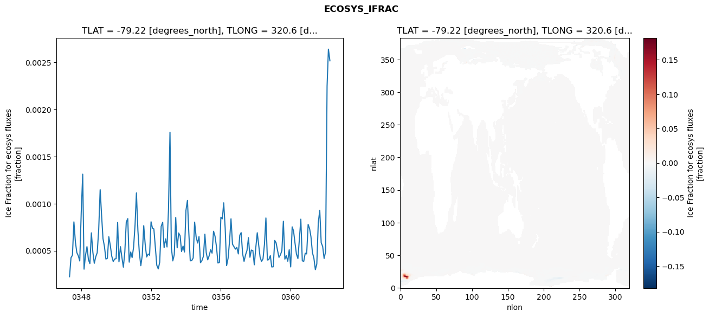
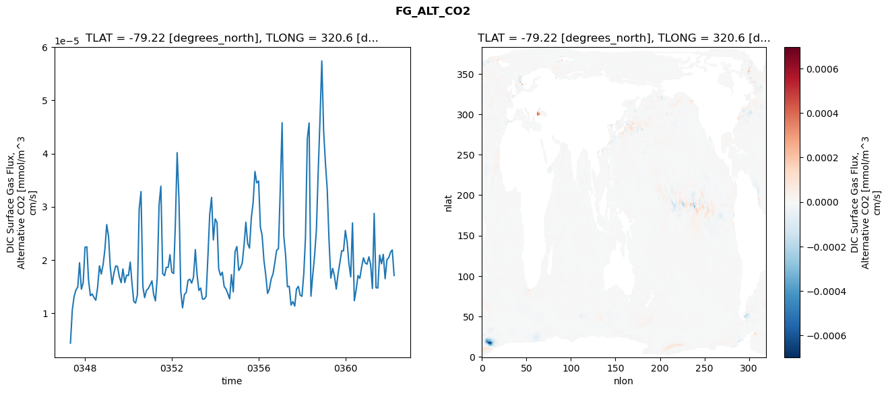

glb-dor_North_Atlantic_basin_026_1999-04-01_00105#
Simulation details#
Case: smyle.cdr-atlas-v0.glb-dor_North_Atlantic_basin_026_1999-04-01_00105.001
Basin: North_Atlantic_basin
Polygon: 26.0
Start date: 1999-04
Show code cell source Hide code cell source
import xarray as xr
import matplotlib.pyplot as plt
Show code cell source Hide code cell source
zarr_store = "/path/to/zarr/store"
# Parameters
zarr_store = "/global/cfs/projectdirs/m4746/Projects/Ocean-CDR-Atlas-v0/data/validation/smyle.cdr-atlas-v0.glb-dor_North_Atlantic_basin_026_1999-04-01_00105.001.validation.zarr"
Show code cell source Hide code cell source
%%time
ds_o = xr.open_zarr(zarr_store).compute()
ds_o
CPU times: user 640 ms, sys: 452 ms, total: 1.09 s
Wall time: 1.41 s
<xarray.Dataset> Size: 2MB
Dimensions: (nlat: 384, nlon: 320, time: 180)
Coordinates:
TLAT float64 8B -79.22
TLONG float64 8B 320.6
ULAT float64 8B -78.95
ULONG float64 8B 321.1
* time (time) object 1kB 0347-05-01 00:00:00 ... 0362-04-01 0...
z_t float32 4B 500.0
Dimensions without coordinates: nlat, nlon
Data variables:
ALK_ALT_CO2_diff (nlat, nlon) float32 492kB nan nan nan ... nan nan nan
ALK_ALT_CO2_rmse (time) float64 1kB 0.0118 0.04214 ... 0.1898 0.115
DIC_ALT_CO2_diff (nlat, nlon) float32 492kB nan nan nan ... nan nan nan
DIC_ALT_CO2_rmse (time) float64 1kB 0.01626 0.05497 ... 0.2006 0.1441
ECOSYS_IFRAC_diff (nlat, nlon) float32 492kB nan nan nan ... nan nan nan
ECOSYS_IFRAC_rmse (time) float64 1kB 0.0002228 0.0004247 ... 0.002518
FG_ALT_CO2_diff (nlat, nlon) float32 492kB nan nan nan ... nan nan nan
FG_ALT_CO2_rmse (time) float64 1kB 4.345e-06 1.059e-05 ... 1.706e-05xarray.Dataset
- nlat: 384
- nlon: 320
- time: 180
- TLAT()float64-79.22
- long_name :
- array of t-grid latitudes
- units :
- degrees_north
array(-79.22052261)
- TLONG()float64320.6
- long_name :
- array of t-grid longitudes
- units :
- degrees_east
array(320.56250892)
- ULAT()float64-78.95
- long_name :
- array of u-grid latitudes
- units :
- degrees_north
array(-78.95289509)
- ULONG()float64321.1
- long_name :
- array of u-grid longitudes
- units :
- degrees_east
array(321.12500894)
- time(time)object0347-05-01 00:00:00 ... 0362-04-...
- bounds :
- time_bound
- long_name :
- time
array([cftime.DatetimeNoLeap(347, 5, 1, 0, 0, 0, 0, has_year_zero=True), cftime.DatetimeNoLeap(347, 6, 1, 0, 0, 0, 0, has_year_zero=True), cftime.DatetimeNoLeap(347, 7, 1, 0, 0, 0, 0, has_year_zero=True), cftime.DatetimeNoLeap(347, 8, 1, 0, 0, 0, 0, has_year_zero=True), cftime.DatetimeNoLeap(347, 9, 1, 0, 0, 0, 0, has_year_zero=True), cftime.DatetimeNoLeap(347, 10, 1, 0, 0, 0, 0, has_year_zero=True), cftime.DatetimeNoLeap(347, 11, 1, 0, 0, 0, 0, has_year_zero=True), cftime.DatetimeNoLeap(347, 12, 1, 0, 0, 0, 0, has_year_zero=True), cftime.DatetimeNoLeap(348, 1, 1, 0, 0, 0, 0, has_year_zero=True), cftime.DatetimeNoLeap(348, 2, 1, 0, 0, 0, 0, has_year_zero=True), cftime.DatetimeNoLeap(348, 3, 1, 0, 0, 0, 0, has_year_zero=True), cftime.DatetimeNoLeap(348, 4, 1, 0, 0, 0, 0, has_year_zero=True), cftime.DatetimeNoLeap(348, 5, 1, 0, 0, 0, 0, has_year_zero=True), cftime.DatetimeNoLeap(348, 6, 1, 0, 0, 0, 0, has_year_zero=True), cftime.DatetimeNoLeap(348, 7, 1, 0, 0, 0, 0, has_year_zero=True), cftime.DatetimeNoLeap(348, 8, 1, 0, 0, 0, 0, has_year_zero=True), cftime.DatetimeNoLeap(348, 9, 1, 0, 0, 0, 0, has_year_zero=True), cftime.DatetimeNoLeap(348, 10, 1, 0, 0, 0, 0, has_year_zero=True), cftime.DatetimeNoLeap(348, 11, 1, 0, 0, 0, 0, has_year_zero=True), cftime.DatetimeNoLeap(348, 12, 1, 0, 0, 0, 0, has_year_zero=True), cftime.DatetimeNoLeap(349, 1, 1, 0, 0, 0, 0, has_year_zero=True), cftime.DatetimeNoLeap(349, 2, 1, 0, 0, 0, 0, has_year_zero=True), cftime.DatetimeNoLeap(349, 3, 1, 0, 0, 0, 0, has_year_zero=True), cftime.DatetimeNoLeap(349, 4, 1, 0, 0, 0, 0, has_year_zero=True), cftime.DatetimeNoLeap(349, 5, 1, 0, 0, 0, 0, has_year_zero=True), cftime.DatetimeNoLeap(349, 6, 1, 0, 0, 0, 0, has_year_zero=True), cftime.DatetimeNoLeap(349, 7, 1, 0, 0, 0, 0, has_year_zero=True), cftime.DatetimeNoLeap(349, 8, 1, 0, 0, 0, 0, has_year_zero=True), cftime.DatetimeNoLeap(349, 9, 1, 0, 0, 0, 0, has_year_zero=True), cftime.DatetimeNoLeap(349, 10, 1, 0, 0, 0, 0, has_year_zero=True), cftime.DatetimeNoLeap(349, 11, 1, 0, 0, 0, 0, has_year_zero=True), cftime.DatetimeNoLeap(349, 12, 1, 0, 0, 0, 0, has_year_zero=True), cftime.DatetimeNoLeap(350, 1, 1, 0, 0, 0, 0, has_year_zero=True), cftime.DatetimeNoLeap(350, 2, 1, 0, 0, 0, 0, has_year_zero=True), cftime.DatetimeNoLeap(350, 3, 1, 0, 0, 0, 0, has_year_zero=True), cftime.DatetimeNoLeap(350, 4, 1, 0, 0, 0, 0, has_year_zero=True), cftime.DatetimeNoLeap(350, 5, 1, 0, 0, 0, 0, has_year_zero=True), cftime.DatetimeNoLeap(350, 6, 1, 0, 0, 0, 0, has_year_zero=True), cftime.DatetimeNoLeap(350, 7, 1, 0, 0, 0, 0, has_year_zero=True), cftime.DatetimeNoLeap(350, 8, 1, 0, 0, 0, 0, has_year_zero=True), cftime.DatetimeNoLeap(350, 9, 1, 0, 0, 0, 0, has_year_zero=True), cftime.DatetimeNoLeap(350, 10, 1, 0, 0, 0, 0, has_year_zero=True), cftime.DatetimeNoLeap(350, 11, 1, 0, 0, 0, 0, has_year_zero=True), cftime.DatetimeNoLeap(350, 12, 1, 0, 0, 0, 0, has_year_zero=True), cftime.DatetimeNoLeap(351, 1, 1, 0, 0, 0, 0, has_year_zero=True), cftime.DatetimeNoLeap(351, 2, 1, 0, 0, 0, 0, has_year_zero=True), cftime.DatetimeNoLeap(351, 3, 1, 0, 0, 0, 0, has_year_zero=True), cftime.DatetimeNoLeap(351, 4, 1, 0, 0, 0, 0, has_year_zero=True), cftime.DatetimeNoLeap(351, 5, 1, 0, 0, 0, 0, has_year_zero=True), cftime.DatetimeNoLeap(351, 6, 1, 0, 0, 0, 0, has_year_zero=True), cftime.DatetimeNoLeap(351, 7, 1, 0, 0, 0, 0, has_year_zero=True), cftime.DatetimeNoLeap(351, 8, 1, 0, 0, 0, 0, has_year_zero=True), cftime.DatetimeNoLeap(351, 9, 1, 0, 0, 0, 0, has_year_zero=True), cftime.DatetimeNoLeap(351, 10, 1, 0, 0, 0, 0, has_year_zero=True), cftime.DatetimeNoLeap(351, 11, 1, 0, 0, 0, 0, has_year_zero=True), cftime.DatetimeNoLeap(351, 12, 1, 0, 0, 0, 0, has_year_zero=True), cftime.DatetimeNoLeap(352, 1, 1, 0, 0, 0, 0, has_year_zero=True), cftime.DatetimeNoLeap(352, 2, 1, 0, 0, 0, 0, has_year_zero=True), cftime.DatetimeNoLeap(352, 3, 1, 0, 0, 0, 0, has_year_zero=True), cftime.DatetimeNoLeap(352, 4, 1, 0, 0, 0, 0, has_year_zero=True), cftime.DatetimeNoLeap(352, 5, 1, 0, 0, 0, 0, has_year_zero=True), cftime.DatetimeNoLeap(352, 6, 1, 0, 0, 0, 0, has_year_zero=True), cftime.DatetimeNoLeap(352, 7, 1, 0, 0, 0, 0, has_year_zero=True), cftime.DatetimeNoLeap(352, 8, 1, 0, 0, 0, 0, has_year_zero=True), cftime.DatetimeNoLeap(352, 9, 1, 0, 0, 0, 0, has_year_zero=True), cftime.DatetimeNoLeap(352, 10, 1, 0, 0, 0, 0, has_year_zero=True), cftime.DatetimeNoLeap(352, 11, 1, 0, 0, 0, 0, has_year_zero=True), cftime.DatetimeNoLeap(352, 12, 1, 0, 0, 0, 0, has_year_zero=True), cftime.DatetimeNoLeap(353, 1, 1, 0, 0, 0, 0, has_year_zero=True), cftime.DatetimeNoLeap(353, 2, 1, 0, 0, 0, 0, has_year_zero=True), cftime.DatetimeNoLeap(353, 3, 1, 0, 0, 0, 0, has_year_zero=True), cftime.DatetimeNoLeap(353, 4, 1, 0, 0, 0, 0, has_year_zero=True), cftime.DatetimeNoLeap(353, 5, 1, 0, 0, 0, 0, has_year_zero=True), cftime.DatetimeNoLeap(353, 6, 1, 0, 0, 0, 0, has_year_zero=True), cftime.DatetimeNoLeap(353, 7, 1, 0, 0, 0, 0, has_year_zero=True), cftime.DatetimeNoLeap(353, 8, 1, 0, 0, 0, 0, has_year_zero=True), cftime.DatetimeNoLeap(353, 9, 1, 0, 0, 0, 0, has_year_zero=True), cftime.DatetimeNoLeap(353, 10, 1, 0, 0, 0, 0, has_year_zero=True), cftime.DatetimeNoLeap(353, 11, 1, 0, 0, 0, 0, has_year_zero=True), cftime.DatetimeNoLeap(353, 12, 1, 0, 0, 0, 0, has_year_zero=True), cftime.DatetimeNoLeap(354, 1, 1, 0, 0, 0, 0, has_year_zero=True), cftime.DatetimeNoLeap(354, 2, 1, 0, 0, 0, 0, has_year_zero=True), cftime.DatetimeNoLeap(354, 3, 1, 0, 0, 0, 0, has_year_zero=True), cftime.DatetimeNoLeap(354, 4, 1, 0, 0, 0, 0, has_year_zero=True), cftime.DatetimeNoLeap(354, 5, 1, 0, 0, 0, 0, has_year_zero=True), cftime.DatetimeNoLeap(354, 6, 1, 0, 0, 0, 0, has_year_zero=True), cftime.DatetimeNoLeap(354, 7, 1, 0, 0, 0, 0, has_year_zero=True), cftime.DatetimeNoLeap(354, 8, 1, 0, 0, 0, 0, has_year_zero=True), cftime.DatetimeNoLeap(354, 9, 1, 0, 0, 0, 0, has_year_zero=True), cftime.DatetimeNoLeap(354, 10, 1, 0, 0, 0, 0, has_year_zero=True), cftime.DatetimeNoLeap(354, 11, 1, 0, 0, 0, 0, has_year_zero=True), cftime.DatetimeNoLeap(354, 12, 1, 0, 0, 0, 0, has_year_zero=True), cftime.DatetimeNoLeap(355, 1, 1, 0, 0, 0, 0, has_year_zero=True), cftime.DatetimeNoLeap(355, 2, 1, 0, 0, 0, 0, has_year_zero=True), cftime.DatetimeNoLeap(355, 3, 1, 0, 0, 0, 0, has_year_zero=True), cftime.DatetimeNoLeap(355, 4, 1, 0, 0, 0, 0, has_year_zero=True), cftime.DatetimeNoLeap(355, 5, 1, 0, 0, 0, 0, has_year_zero=True), cftime.DatetimeNoLeap(355, 6, 1, 0, 0, 0, 0, has_year_zero=True), cftime.DatetimeNoLeap(355, 7, 1, 0, 0, 0, 0, has_year_zero=True), cftime.DatetimeNoLeap(355, 8, 1, 0, 0, 0, 0, has_year_zero=True), cftime.DatetimeNoLeap(355, 9, 1, 0, 0, 0, 0, has_year_zero=True), cftime.DatetimeNoLeap(355, 10, 1, 0, 0, 0, 0, has_year_zero=True), cftime.DatetimeNoLeap(355, 11, 1, 0, 0, 0, 0, has_year_zero=True), cftime.DatetimeNoLeap(355, 12, 1, 0, 0, 0, 0, has_year_zero=True), cftime.DatetimeNoLeap(356, 1, 1, 0, 0, 0, 0, has_year_zero=True), cftime.DatetimeNoLeap(356, 2, 1, 0, 0, 0, 0, has_year_zero=True), cftime.DatetimeNoLeap(356, 3, 1, 0, 0, 0, 0, has_year_zero=True), cftime.DatetimeNoLeap(356, 4, 1, 0, 0, 0, 0, has_year_zero=True), cftime.DatetimeNoLeap(356, 5, 1, 0, 0, 0, 0, has_year_zero=True), cftime.DatetimeNoLeap(356, 6, 1, 0, 0, 0, 0, has_year_zero=True), cftime.DatetimeNoLeap(356, 7, 1, 0, 0, 0, 0, has_year_zero=True), cftime.DatetimeNoLeap(356, 8, 1, 0, 0, 0, 0, has_year_zero=True), cftime.DatetimeNoLeap(356, 9, 1, 0, 0, 0, 0, has_year_zero=True), cftime.DatetimeNoLeap(356, 10, 1, 0, 0, 0, 0, has_year_zero=True), cftime.DatetimeNoLeap(356, 11, 1, 0, 0, 0, 0, has_year_zero=True), cftime.DatetimeNoLeap(356, 12, 1, 0, 0, 0, 0, has_year_zero=True), cftime.DatetimeNoLeap(357, 1, 1, 0, 0, 0, 0, has_year_zero=True), cftime.DatetimeNoLeap(357, 2, 1, 0, 0, 0, 0, has_year_zero=True), cftime.DatetimeNoLeap(357, 3, 1, 0, 0, 0, 0, has_year_zero=True), cftime.DatetimeNoLeap(357, 4, 1, 0, 0, 0, 0, has_year_zero=True), cftime.DatetimeNoLeap(357, 5, 1, 0, 0, 0, 0, has_year_zero=True), cftime.DatetimeNoLeap(357, 6, 1, 0, 0, 0, 0, has_year_zero=True), cftime.DatetimeNoLeap(357, 7, 1, 0, 0, 0, 0, has_year_zero=True), cftime.DatetimeNoLeap(357, 8, 1, 0, 0, 0, 0, has_year_zero=True), cftime.DatetimeNoLeap(357, 9, 1, 0, 0, 0, 0, has_year_zero=True), cftime.DatetimeNoLeap(357, 10, 1, 0, 0, 0, 0, has_year_zero=True), cftime.DatetimeNoLeap(357, 11, 1, 0, 0, 0, 0, has_year_zero=True), cftime.DatetimeNoLeap(357, 12, 1, 0, 0, 0, 0, has_year_zero=True), cftime.DatetimeNoLeap(358, 1, 1, 0, 0, 0, 0, has_year_zero=True), cftime.DatetimeNoLeap(358, 2, 1, 0, 0, 0, 0, has_year_zero=True), cftime.DatetimeNoLeap(358, 3, 1, 0, 0, 0, 0, has_year_zero=True), cftime.DatetimeNoLeap(358, 4, 1, 0, 0, 0, 0, has_year_zero=True), cftime.DatetimeNoLeap(358, 5, 1, 0, 0, 0, 0, has_year_zero=True), cftime.DatetimeNoLeap(358, 6, 1, 0, 0, 0, 0, has_year_zero=True), cftime.DatetimeNoLeap(358, 7, 1, 0, 0, 0, 0, has_year_zero=True), cftime.DatetimeNoLeap(358, 8, 1, 0, 0, 0, 0, has_year_zero=True), cftime.DatetimeNoLeap(358, 9, 1, 0, 0, 0, 0, has_year_zero=True), cftime.DatetimeNoLeap(358, 10, 1, 0, 0, 0, 0, has_year_zero=True), cftime.DatetimeNoLeap(358, 11, 1, 0, 0, 0, 0, has_year_zero=True), cftime.DatetimeNoLeap(358, 12, 1, 0, 0, 0, 0, has_year_zero=True), cftime.DatetimeNoLeap(359, 1, 1, 0, 0, 0, 0, has_year_zero=True), cftime.DatetimeNoLeap(359, 2, 1, 0, 0, 0, 0, has_year_zero=True), cftime.DatetimeNoLeap(359, 3, 1, 0, 0, 0, 0, has_year_zero=True), cftime.DatetimeNoLeap(359, 4, 1, 0, 0, 0, 0, has_year_zero=True), cftime.DatetimeNoLeap(359, 5, 1, 0, 0, 0, 0, has_year_zero=True), cftime.DatetimeNoLeap(359, 6, 1, 0, 0, 0, 0, has_year_zero=True), cftime.DatetimeNoLeap(359, 7, 1, 0, 0, 0, 0, has_year_zero=True), cftime.DatetimeNoLeap(359, 8, 1, 0, 0, 0, 0, has_year_zero=True), cftime.DatetimeNoLeap(359, 9, 1, 0, 0, 0, 0, has_year_zero=True), cftime.DatetimeNoLeap(359, 10, 1, 0, 0, 0, 0, has_year_zero=True), cftime.DatetimeNoLeap(359, 11, 1, 0, 0, 0, 0, has_year_zero=True), cftime.DatetimeNoLeap(359, 12, 1, 0, 0, 0, 0, has_year_zero=True), cftime.DatetimeNoLeap(360, 1, 1, 0, 0, 0, 0, has_year_zero=True), cftime.DatetimeNoLeap(360, 2, 1, 0, 0, 0, 0, has_year_zero=True), cftime.DatetimeNoLeap(360, 3, 1, 0, 0, 0, 0, has_year_zero=True), cftime.DatetimeNoLeap(360, 4, 1, 0, 0, 0, 0, has_year_zero=True), cftime.DatetimeNoLeap(360, 5, 1, 0, 0, 0, 0, has_year_zero=True), cftime.DatetimeNoLeap(360, 6, 1, 0, 0, 0, 0, has_year_zero=True), cftime.DatetimeNoLeap(360, 7, 1, 0, 0, 0, 0, has_year_zero=True), cftime.DatetimeNoLeap(360, 8, 1, 0, 0, 0, 0, has_year_zero=True), cftime.DatetimeNoLeap(360, 9, 1, 0, 0, 0, 0, has_year_zero=True), cftime.DatetimeNoLeap(360, 10, 1, 0, 0, 0, 0, has_year_zero=True), cftime.DatetimeNoLeap(360, 11, 1, 0, 0, 0, 0, has_year_zero=True), cftime.DatetimeNoLeap(360, 12, 1, 0, 0, 0, 0, has_year_zero=True), cftime.DatetimeNoLeap(361, 1, 1, 0, 0, 0, 0, has_year_zero=True), cftime.DatetimeNoLeap(361, 2, 1, 0, 0, 0, 0, has_year_zero=True), cftime.DatetimeNoLeap(361, 3, 1, 0, 0, 0, 0, has_year_zero=True), cftime.DatetimeNoLeap(361, 4, 1, 0, 0, 0, 0, has_year_zero=True), cftime.DatetimeNoLeap(361, 5, 1, 0, 0, 0, 0, has_year_zero=True), cftime.DatetimeNoLeap(361, 6, 1, 0, 0, 0, 0, has_year_zero=True), cftime.DatetimeNoLeap(361, 7, 1, 0, 0, 0, 0, has_year_zero=True), cftime.DatetimeNoLeap(361, 8, 1, 0, 0, 0, 0, has_year_zero=True), cftime.DatetimeNoLeap(361, 9, 1, 0, 0, 0, 0, has_year_zero=True), cftime.DatetimeNoLeap(361, 10, 1, 0, 0, 0, 0, has_year_zero=True), cftime.DatetimeNoLeap(361, 11, 1, 0, 0, 0, 0, has_year_zero=True), cftime.DatetimeNoLeap(361, 12, 1, 0, 0, 0, 0, has_year_zero=True), cftime.DatetimeNoLeap(362, 1, 1, 0, 0, 0, 0, has_year_zero=True), cftime.DatetimeNoLeap(362, 2, 1, 0, 0, 0, 0, has_year_zero=True), cftime.DatetimeNoLeap(362, 3, 1, 0, 0, 0, 0, has_year_zero=True), cftime.DatetimeNoLeap(362, 4, 1, 0, 0, 0, 0, has_year_zero=True)], dtype=object) - z_t()float32500.0
- long_name :
- depth from surface to midpoint of layer
- positive :
- down
- units :
- centimeters
- valid_max :
- 537500.0
- valid_min :
- 500.0
array(500., dtype=float32)
- ALK_ALT_CO2_diff(nlat, nlon)float32nan nan nan nan ... nan nan nan nan
- cell_methods :
- time: mean
- grid_loc :
- 3111
- long_name :
- Alkalinity, Alternative CO2
- units :
- meq/m^3
array([[ nan, nan, nan, ..., nan, nan, nan], [ nan, nan, nan, ..., nan, nan, nan], [0.0168457 , 0.03442383, 0.05175781, ..., nan, nan, nan], ..., [ nan, nan, nan, ..., nan, nan, nan], [ nan, nan, nan, ..., nan, nan, nan], [ nan, nan, nan, ..., nan, nan, nan]], dtype=float32) - ALK_ALT_CO2_rmse(time)float640.0118 0.04214 ... 0.1898 0.115
- cell_methods :
- time: mean
- grid_loc :
- 3111
- long_name :
- Alkalinity, Alternative CO2
- units :
- meq/m^3
array([0.01180256, 0.04214081, 0.05956103, 0.13160905, 0.1280707 , 0.05479095, 0.0488085 , 0.05116953, 0.06399189, 0.09420515, 0.13175033, 0.09470545, 0.10628164, 0.11226058, 0.09465526, 0.0960785 , 0.07552214, 0.08093741, 0.06380687, 0.0789602 , 0.11708943, 0.17646622, 0.23744322, 0.1333663 , 0.11304039, 0.13634246, 0.14614997, 0.15343419, 0.12105302, 0.06965983, 0.06727973, 0.0519333 , 0.05576469, 0.15650642, 0.21465474, 0.13608547, 0.1247877 , 0.14204493, 0.13292067, 0.13024321, 0.09951636, 0.09319865, 0.07313195, 0.06208307, 0.05927407, 0.10743224, 0.18264924, 0.11092134, 0.10346098, 0.11827646, 0.11950533, 0.12808021, 0.15116234, 0.09437634, 0.06419222, 0.07021443, 0.06823748, 0.10576666, 0.17098663, 0.09304838, 0.11715644, 0.11333207, 0.12876352, 0.20343514, 0.1180647 , 0.14002675, 0.08253392, 0.0614972 , 0.05939767, 0.13586424, 0.21672585, 0.11796164, 0.10507258, 0.09586696, 0.10404034, 0.09258918, 0.08343342, 0.0837748 , 0.0734531 , 0.07632148, 0.07753292, 0.14783247, 0.23621186, 0.1219129 , 0.10722307, 0.15452673, 0.1614012 , 0.15892617, 0.12952416, 0.08266935, 0.08424233, 0.06809664, 0.06788162, 0.09266208, 0.1807907 , 0.12063535, 0.10600174, 0.13775568, 0.14660194, 0.13749987, 0.14864943, 0.16911246, 0.1560956 , 0.12247569, 0.10734625, 0.11612051, 0.15319498, 0.11433818, 0.0999503 , 0.11933658, 0.15403191, 0.24358141, 0.18184457, 0.14134171, 0.1466533 , 0.15648036, 0.15727127, 0.16834162, 0.19226671, 0.14563436, 0.12765342, 0.16120355, 0.13054651, 0.13483915, 0.12248509, 0.08754148, 0.10519954, 0.11937174, 0.10033668, 0.16111917, 0.19996939, 0.11637984, 0.14348854, 0.12816658, 0.15152853, 0.13071259, 0.09227601, 0.08080646, 0.09008614, 0.10544478, 0.09769306, 0.17006528, 0.21142285, 0.1119331 , 0.10303295, 0.15056848, 0.14247429, 0.1640275 , 0.08155431, 0.08917414, 0.07382253, 0.07364523, 0.07200488, 0.12913207, 0.1760759 , 0.08918091, 0.08758104, 0.11989359, 0.13019509, 0.14443828, 0.07456718, 0.10018005, 0.12531994, 0.07763809, 0.09018657, 0.16829033, 0.15999848, 0.09472304, 0.09888124, 0.1672349 , 0.22322353, 0.16296206, 0.10742466, 0.1103266 , 0.0861384 , 0.06755085, 0.06938065, 0.18047423, 0.18979197, 0.11501869]) - DIC_ALT_CO2_diff(nlat, nlon)float32nan nan nan nan ... nan nan nan nan
- cell_methods :
- time: mean
- grid_loc :
- 3111
- long_name :
- Dissolved Inorganic Carbon, Alternative CO2
- units :
- mmol/m^3
array([[ nan, nan, nan, ..., nan, nan, nan], [ nan, nan, nan, ..., nan, nan, nan], [-0.04101562, -0.01416016, 0.01196289, ..., nan, nan, nan], ..., [ nan, nan, nan, ..., nan, nan, nan], [ nan, nan, nan, ..., nan, nan, nan], [ nan, nan, nan, ..., nan, nan, nan]], dtype=float32) - DIC_ALT_CO2_rmse(time)float640.01626 0.05497 ... 0.2006 0.1441
- cell_methods :
- time: mean
- grid_loc :
- 3111
- long_name :
- Dissolved Inorganic Carbon, Alternative CO2
- units :
- mmol/m^3
array([0.0162551 , 0.05496679, 0.08544493, 0.15268239, 0.15486387, 0.11539063, 0.11245072, 0.1281541 , 0.15276212, 0.17111862, 0.17292738, 0.14880104, 0.14016291, 0.14664698, 0.14982205, 0.15601139, 0.15455694, 0.15529582, 0.14146314, 0.17484064, 0.20708989, 0.23073694, 0.25388214, 0.16894964, 0.14497527, 0.15837553, 0.16898193, 0.17466861, 0.15945942, 0.12386844, 0.11747921, 0.10909508, 0.11445281, 0.18034435, 0.21728751, 0.14790574, 0.13569998, 0.15385195, 0.15812985, 0.16692952, 0.14584401, 0.14376533, 0.1246273 , 0.10814938, 0.10583606, 0.13958633, 0.19534966, 0.13509829, 0.13133419, 0.14958716, 0.16240847, 0.16592816, 0.1737969 , 0.1537461 , 0.12652226, 0.12771756, 0.1255658 , 0.1444051 , 0.18665154, 0.13835429, 0.15051658, 0.1388881 , 0.15456759, 0.21781365, 0.14346231, 0.1641552 , 0.12925793, 0.12121098, 0.11139408, 0.15567776, 0.2145205 , 0.13919605, 0.12370523, 0.11748507, 0.13679443, 0.13354399, 0.15479231, 0.19068142, 0.1545736 , 0.17000552, 0.18930968, 0.21652955, 0.2524284 , 0.17018214, 0.15958864, 0.1865395 , 0.18620375, 0.17987778, 0.15851 , 0.13412994, 0.13197264, 0.12977781, 0.11995566, 0.14575541, 0.22481179, 0.17044243, 0.16218945, 0.16311015, 0.17498689, 0.17811978, 0.2040937 , 0.24614837, 0.27380569, 0.27391329, 0.24604629, 0.22302049, 0.21935408, 0.19572697, 0.16404012, 0.15842706, 0.19036728, 0.26114543, 0.2008479 , 0.19883455, 0.2111871 , 0.22269663, 0.21936271, 0.22646464, 0.23487457, 0.18312351, 0.15824535, 0.17638683, 0.16135244, 0.16586501, 0.14754434, 0.12436318, 0.14102255, 0.15116995, 0.12706783, 0.16784458, 0.19627588, 0.13042699, 0.15128723, 0.14778631, 0.18720766, 0.19311174, 0.21241674, 0.26237813, 0.3055714 , 0.29465208, 0.25258554, 0.27608922, 0.29001348, 0.19606176, 0.15127236, 0.17087434, 0.16405909, 0.17968592, 0.14161666, 0.15201376, 0.15969365, 0.1405023 , 0.14719661, 0.18444887, 0.20802124, 0.13473286, 0.12448443, 0.14555701, 0.167853 , 0.1734207 , 0.1333937 , 0.15438089, 0.17484037, 0.14773307, 0.15037106, 0.19637985, 0.18746709, 0.13182945, 0.12581038, 0.17611058, 0.23287728, 0.18581034, 0.15398674, 0.15405367, 0.14018723, 0.13399278, 0.12347101, 0.19346731, 0.20058459, 0.14409181]) - ECOSYS_IFRAC_diff(nlat, nlon)float32nan nan nan nan ... nan nan nan nan
- cell_methods :
- time: mean
- grid_loc :
- 2110
- long_name :
- Ice Fraction for ecosys fluxes
- units :
- fraction
array([[ nan, nan, nan, ..., nan, nan, nan], [ nan, nan, nan, ..., nan, nan, nan], [-0.00030613, -0.00134426, -0.00303656, ..., nan, nan, nan], ..., [ nan, nan, nan, ..., nan, nan, nan], [ nan, nan, nan, ..., nan, nan, nan], [ nan, nan, nan, ..., nan, nan, nan]], dtype=float32) - ECOSYS_IFRAC_rmse(time)float640.0002228 0.0004247 ... 0.002518
- cell_methods :
- time: mean
- grid_loc :
- 2110
- long_name :
- Ice Fraction for ecosys fluxes
- units :
- fraction
array([0.00022278, 0.00042475, 0.00045126, 0.00080614, 0.00059237, 0.0004796 , 0.00044544, 0.00039051, 0.00090681, 0.00131275, 0.0003035 , 0.00045245, 0.00054273, 0.00040322, 0.00036254, 0.00068876, 0.00048434, 0.00036576, 0.00043564, 0.00047817, 0.00071994, 0.00114816, 0.00089023, 0.00062863, 0.00054559, 0.00041122, 0.0004187 , 0.00064749, 0.00055511, 0.00044201, 0.00038462, 0.00041088, 0.00041557, 0.00079959, 0.000381 , 0.00054256, 0.00042994, 0.00032471, 0.00048371, 0.00080408, 0.00084071, 0.00037821, 0.00048587, 0.00042685, 0.00053772, 0.00077698, 0.00111363, 0.00071475, 0.00047778, 0.00034032, 0.00045025, 0.00076551, 0.00056348, 0.00043276, 0.00046444, 0.00045181, 0.00080703, 0.00073587, 0.00073128, 0.0005368 , 0.00034498, 0.00030604, 0.00037711, 0.00075838, 0.00080151, 0.00053185, 0.00062443, 0.00053955, 0.00093971, 0.00175794, 0.00053677, 0.00039134, 0.00045568, 0.00085232, 0.00053027, 0.00068739, 0.00065872, 0.00049122, 0.00054883, 0.00048566, 0.00092855, 0.00103446, 0.0006974 , 0.0003925 , 0.00039377, 0.00042256, 0.00080327, 0.00064936, 0.00058134, 0.00064883, 0.00037175, 0.00039454, 0.0004405 , 0.0006747 , 0.00047824, 0.00040267, 0.00044533, 0.00050906, 0.00047329, 0.00070679, 0.00065269, 0.00054119, 0.00036873, 0.00037433, 0.00085583, 0.00083823, 0.00100854, 0.00074109, 0.00034132, 0.0004199 , 0.00059821, 0.00083813, 0.00056899, 0.00054325, 0.00051681, 0.00053488, 0.00046577, 0.00066408, 0.00069176, 0.00046649, 0.00038609, 0.00045564, 0.00050215, 0.0006372 , 0.00042974, 0.00050671, 0.00050022, 0.00034987, 0.00053053, 0.00069024, 0.00056755, 0.00043223, 0.0003858 , 0.00041264, 0.00056443, 0.00084777, 0.00040071, 0.00040505, 0.00044699, 0.00032669, 0.00032868, 0.00060885, 0.0005849 , 0.00050319, 0.00042875, 0.00045598, 0.00050139, 0.00081241, 0.00040972, 0.00044643, 0.0003876 , 0.00050962, 0.00032723, 0.00075289, 0.00071179, 0.00058183, 0.00046481, 0.00041617, 0.00061784, 0.00083491, 0.00039222, 0.00038652, 0.00047287, 0.0004658 , 0.0007791 , 0.00073264, 0.00064708, 0.00047772, 0.00042109, 0.00029835, 0.00035842, 0.00079747, 0.00092837, 0.00058487, 0.00054397, 0.00041733, 0.00049038, 0.00224928, 0.00264155, 0.0025179 ]) - FG_ALT_CO2_diff(nlat, nlon)float32nan nan nan nan ... nan nan nan nan
- cell_methods :
- time: mean
- grid_loc :
- 2110
- long_name :
- DIC Surface Gas Flux, Alternative CO2
- units :
- mmol/m^3 cm/s
array([[ nan, nan, nan, ..., nan, nan, nan], [ nan, nan, nan, ..., nan, nan, nan], [5.3988479e-06, 7.2797702e-06, 1.5515601e-05, ..., nan, nan, nan], ..., [ nan, nan, nan, ..., nan, nan, nan], [ nan, nan, nan, ..., nan, nan, nan], [ nan, nan, nan, ..., nan, nan, nan]], dtype=float32) - FG_ALT_CO2_rmse(time)float644.345e-06 1.059e-05 ... 1.706e-05
- cell_methods :
- time: mean
- grid_loc :
- 2110
- long_name :
- DIC Surface Gas Flux, Alternative CO2
- units :
- mmol/m^3 cm/s
array([4.34490162e-06, 1.05863328e-05, 1.30858558e-05, 1.43242303e-05, 1.49077343e-05, 1.94589420e-05, 1.44833188e-05, 1.56751117e-05, 2.23616117e-05, 2.24594750e-05, 1.62148381e-05, 1.32702301e-05, 1.35862322e-05, 1.29224360e-05, 1.24058961e-05, 1.48618429e-05, 1.88789016e-05, 1.73233274e-05, 1.91041363e-05, 2.19122073e-05, 2.66336947e-05, 2.43696850e-05, 1.87772155e-05, 1.54179569e-05, 1.74392420e-05, 1.88429864e-05, 1.87790893e-05, 1.68369330e-05, 1.57098490e-05, 1.82928228e-05, 1.57350122e-05, 1.71246313e-05, 1.70445534e-05, 1.95744987e-05, 1.57893574e-05, 1.21954935e-05, 1.18736235e-05, 1.33876477e-05, 2.95018046e-05, 3.28476625e-05, 1.50018155e-05, 1.28940660e-05, 1.42812704e-05, 1.46018086e-05, 1.52798613e-05, 1.60515371e-05, 1.35140457e-05, 1.22917625e-05, 1.67101695e-05, 3.03986184e-05, 3.38507106e-05, 1.73881904e-05, 1.70353940e-05, 1.85961032e-05, 1.86037820e-05, 2.09645077e-05, 1.76910131e-05, 1.74346861e-05, 2.63665199e-05, 4.01598622e-05, 3.15824310e-05, 1.41251288e-05, 1.09809079e-05, 1.34741679e-05, 1.38738969e-05, 1.61432744e-05, 1.63639122e-05, 1.56205248e-05, 1.67452160e-05, 2.19325904e-05, 1.73812387e-05, 1.42470806e-05, 1.47027823e-05, 1.26229125e-05, 1.26332090e-05, 1.31207994e-05, 2.07347692e-05, 2.85531889e-05, 3.17465587e-05, 2.37542192e-05, ... 2.79439488e-05, 3.07618553e-05, 3.66235700e-05, 3.44769196e-05, 3.48286517e-05, 2.61171553e-05, 2.46519797e-05, 1.99169924e-05, 1.72137130e-05, 1.36857637e-05, 1.44794080e-05, 1.64199642e-05, 1.73637208e-05, 1.94722016e-05, 2.18128209e-05, 2.20770848e-05, 3.33632862e-05, 4.57859350e-05, 2.45024658e-05, 2.08286514e-05, 1.49428745e-05, 1.50341293e-05, 1.14832893e-05, 1.21542361e-05, 1.13152801e-05, 1.45127643e-05, 1.50149896e-05, 1.33889597e-05, 1.31417724e-05, 1.74853638e-05, 2.42273095e-05, 4.28135648e-05, 4.57441629e-05, 1.31660071e-05, 1.70797964e-05, 2.07435578e-05, 2.56898907e-05, 3.65532241e-05, 4.66643844e-05, 5.74108827e-05, 4.41322780e-05, 3.79516249e-05, 3.34743914e-05, 2.37325277e-05, 1.65739017e-05, 1.84005547e-05, 1.69953756e-05, 1.45172087e-05, 1.74399729e-05, 1.94795825e-05, 2.17313123e-05, 2.16875303e-05, 2.55266414e-05, 2.32425435e-05, 1.94032296e-05, 1.68165585e-05, 2.69447678e-05, 1.23275016e-05, 1.43146262e-05, 1.70392769e-05, 1.65210243e-05, 1.86018673e-05, 2.03880697e-05, 1.94148959e-05, 1.91946613e-05, 2.05783666e-05, 1.91739940e-05, 1.46087788e-05, 2.87391399e-05, 1.47620304e-05, 1.47052826e-05, 2.08905095e-05, 1.92558514e-05, 2.10252202e-05, 1.64531666e-05, 2.00262109e-05, 2.04158925e-05, 2.14673075e-05, 2.18676046e-05, 1.70643147e-05])
- timePandasIndex
PandasIndex(CFTimeIndex([0347-05-01 00:00:00, 0347-06-01 00:00:00, 0347-07-01 00:00:00, 0347-08-01 00:00:00, 0347-09-01 00:00:00, 0347-10-01 00:00:00, 0347-11-01 00:00:00, 0347-12-01 00:00:00, 0348-01-01 00:00:00, 0348-02-01 00:00:00, ... 0361-07-01 00:00:00, 0361-08-01 00:00:00, 0361-09-01 00:00:00, 0361-10-01 00:00:00, 0361-11-01 00:00:00, 0361-12-01 00:00:00, 0362-01-01 00:00:00, 0362-02-01 00:00:00, 0362-03-01 00:00:00, 0362-04-01 00:00:00], dtype='object', length=180, calendar='noleap', freq='MS'))
Show code cell source Hide code cell source
variables = [v[:-5] for v in ds_o.variables if "_rmse" in v]
Show code cell source Hide code cell source
plt.rcParams.update({'figure.max_open_warning': 0})
for v in variables:
fig, axs = plt.subplots(1, 2, figsize=(15, 6))
ds_o[f"{v}_rmse"].plot(ax=axs[0])
ds_o[f"{v}_diff"].plot(ax=axs[1])
plt.suptitle(v, fontweight="bold")



